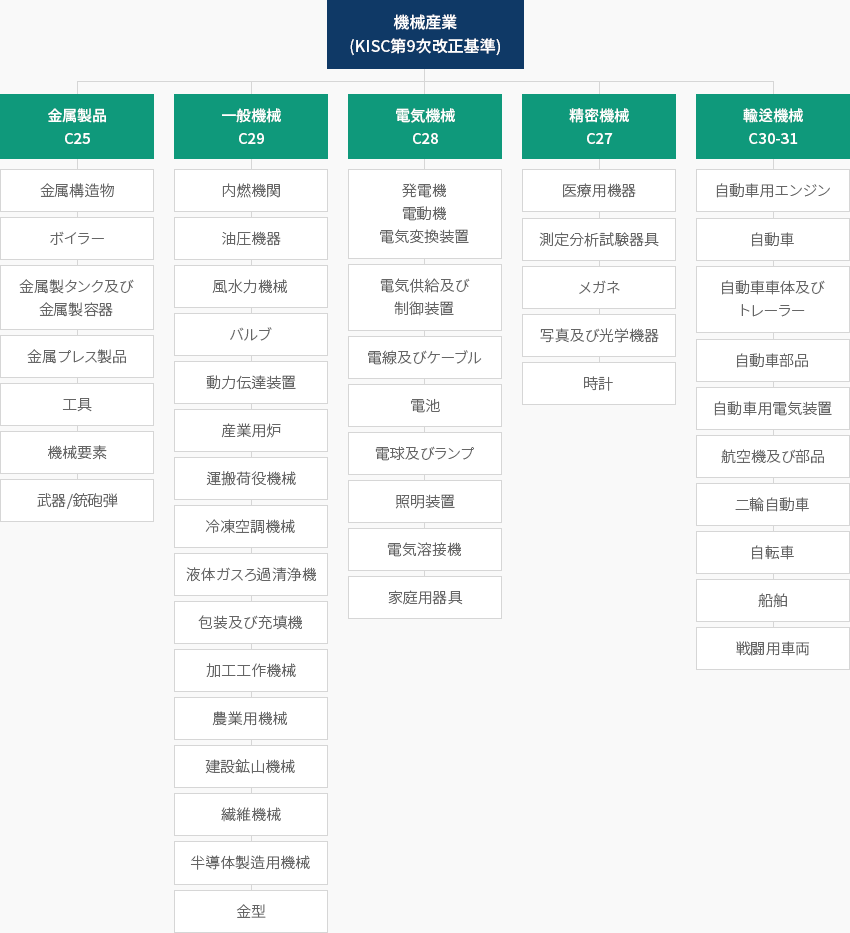
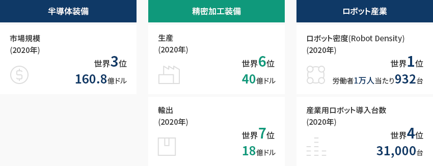
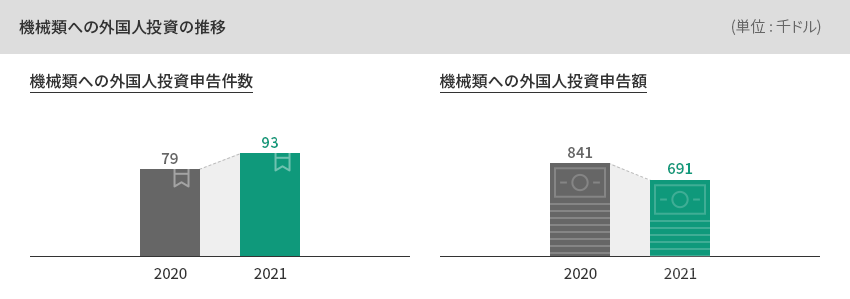
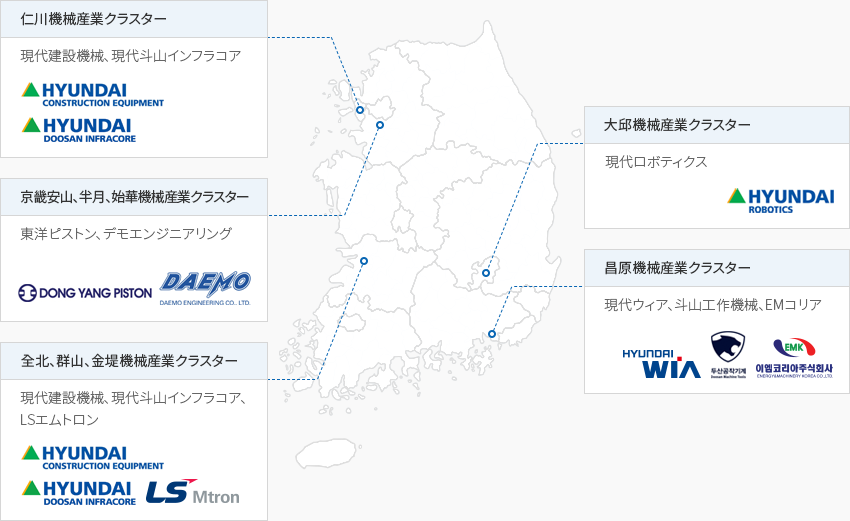

機械
- Home
- Why KOREA
- 産業
- 機械
機械産業
Machinery
-
機械産業の 定義 コンテンツを閉じる機械産業の 定義韓国標準産業分類(KISC)に基づく機械産業には一般機械、電気機械、精密機械、
輸送機械、金属製品(組立金属)の5大業種がすべて含まれる。「韓国標準産業分類に基づく5大機械産業の分類」機械産業(KISC第9次改正基準)-
金属製品 C25
- 金属構造物
- ボイラー
- 金属制タンク及び金属製容器
- ボイラー
- 金属プレス製品
- 工具
- 機械要素
- 武器/銃砲弾
-
一般機械 C29
- 内燃機関
- 油圧機器
- 風水力機械
- バルブ
- 動力伝達装置
- 産業用炉
- 運搬荷役機械
- 冷凍空調機械
- 液体ガスろ過清浄機
- 包装及び充填機
- 加工工作機械
- 農業用機械
- 建設鉱山機械
- 繊維機械
- 半導体製造用機械
- 金型
-
電気機械 C28
- 発電機, 電動機, 電気変換装置
- 電気供給及び制御装置
- 電線及びケーブル
- 電池
- 電球及びランプ
- 照明装置
- 電気溶接機
- 家庭用器具
-
電気機械 C27
- 医療用機器
- 測定分析試験器具
- メガネ
- 写真及び光学機器
- 時計
-
輸送機械 C30-31
- 自動車用エンジン
- 自動車
- 自動車車体及びトレーラー
- 自動車部品
- 自動車用電気装置
- 航空機及び部品
- 二輪自動車
- 自転車
- 船舶
- 戦闘用車両
 ※ 出所：統計庁
※ 出所：統計庁 -
金属製品 C25
-
전후방川上・川下産業生態系基盤の グローバル競争力の強化 コンテンツを開く川上・川下産業生態系基盤の グローバル競争力の強化韓国は機械産業の価格競争力を維持しており、自動車、航空、造船、半導体・ディスプレイなど
川上・川下関連産業の生態系が発達している。韓国は2020年基準で半導体装備市場規模が160.8億ドルで世界3位、精密加工装備は生産40億ドルで
世界6位、輸出18億ドルで世界7位と、その水準が高い。今後、韓国の主力産業での
スマート工場の普及拡大を基に製造システムの供給能力がより強化されるものと見られる。
※ 精密加工装備：工作機械産業(Machine Tool Industry)を意味し、
多様な製造方法の中でも切削加工と焼成加工に使われるすべての機械を含む。また、韓国のロボット密度(労働者1万人当たりのロボット導入台数)は2020年基準で世界トップ、
産業用ロボットの導入台数においては世界4位である。「韓国の主要機械産業の地位」- 半導体装備: 市場規模 (2020年) 世界3位 160.8億ドル
- 精密加工装備: 生産 (2020年) 世界 6位 40億ドル, 輸出(2020年) 世界 7位 18億ドル
- ロボット産業: ロボット密度(Robot Density) (2020年) 世界 1位 労働者1万人当たり932台, 産業用ロボット導入台数(2020年) 世界 4位 31,000대
※ 出所 : 国際半導体装備材料協会(2021.4)、Gardner、韓国工作機械産業協会、国際ロボット連盟(IFR) -
輸出基盤の成長が見込まれる 韓国の中核産業 コンテンツを開く輸出基盤の成長が見込まれる 韓国の中核産業韓国の機械産業は生産額基準で韓国の製造業で6位、企業数1位、従業員数3位、付加価値4位の中核産業である。最近5年間(2015～2020)の年平均輸出増加率は1.4％で、貿易収支の年平均増加率はー0.8％である。
特に同期間の半導体装備の年平均輸出増加率は13.1％となっている。「韓国製造業内の機械産業」(基準 : 2019年)韓国製造業内の機械産業 KISC中分類, 生産額, 企業数, 従事者数, 付加価値 KISC中分類 生産額 企業数 従事者数 付加価値 Code 項目名 兆ウォン 割合 順位 社 割合 順位 千人 割合 順位 兆ウォン 割合 順位 C 製造業 (10~33) 1,552 100.0 - 69,639 100.0 - 2,928 100.0 - 557 100.0 - 29 その他機械及び装備製造業 123 3.8 6 9,835 14.1 1 335 11.4 3 45 8.0 4 ※ 出所 : 統計庁、鉱業ㆍ製造業調査報告書、従業員数10人以上企業基準※ 出所 : 統計庁 「鉱業製造業動向調査」及び「鉱業製造業調査」、関税庁「貿易統計」 -
一般機械、工作機械中心の 韓国への投資 コンテンツを開く一般機械、工作機械中心の 対韓投資の動向機械類への外国人投資は一般機械、工作機械を中心に行われており、2019年は前年に比べて増加傾向を見せた。代表例はボルボグループコリアで、1998年にサムスン重工業の建設機械事業部門を買収して
韓国に進出して以来、ボルボグループコリアの建設機械事業部門はボルボグループ掘削機ビジネスのグローバル生産基地として
総生産量の80％以上を欧州、北米、アジアなど全世界に輸出している。2019年には世界的な半導体装備メーカーの米国ラムリサーチが研究開発(R&D)センターを韓国に完全移転することを決め、
韓国の素材・部品・装備メーカーとの協業及び共同開発を積極的に進めるものと期待される。2021年、世界で唯一、10ナノメートル以下ウェハーの生産工程に必要な極端紫外線(EUV)露光装備を供給している
オランダのASMLが、京畿道華城にエンジニアのためのトレーニングセンターと再製造センターを建設するという投資計画を発表しているが、
これはK半導体ベルト造成計画の柱となる先端装備分野である。 ※ 出所 : 外国人投資統計
※ 出所 : 外国人投資統計 -
ロボット産業の技術力の向上に向けた 政府の政策推進 コンテンツを開くロボット産業の技術力の向上に向けた 政府の政策推進2021年2月に発表された韓国政府の「素材部品装備特化団地の指定」により慶尚南道地域は
精密機械分野特化団地に指定され、機械産業のグローバルサプライチェーンが強化されるものと期待される。2021年4月に発表された韓国政府の「2021年知能型ロボット実行計画」により、人と協力するロボットを拡大して
社会的ニーズ(人口減少、生活の質の改善など)に対応し、ロボットを利用した全産業の非対面化・デジタル転換の
加速化を促進し、積極的な制度改善及び実証基盤の確保によるロボット利用環境を造成することが期待される。
また、2020年4月に発表された韓国政府の「素材・部品・装備産業競争力強化に向けた特別措置法の施行(2020.4.1)」に
よって製造装備産業が注目されており、特に、政府の産業用ロボット育成への意志が強く、機械産業が
活気づくことが期待されている。韓国政府は2019年８月に「第３次知能型ロボット基本計画(2019～2023)」を策定し、開発されたロボットの
試験・認証、実証、企業支援のための７大拠点を構築し、 産学融合促進法の改正を通じて規制のサンドボックス制度を導入した。※ 7大拠点:ロボット認証センター(大邱)、安全ロボット・水中ロボット複合センター(慶尚北道)、製造ロボット技術センター(慶尚南道)、
海洋ロボットセンター(釜山)、ヘルスケアロボットセンター(光州)、ロボット産業化支援センター(大田)、融合部品センター(富川))「2021新規主要技術開発課題」2021新規主要技術開発課題 分野, 主要内容 分野 主要内容 介護 感染者隔離搬送のための人間追従型半自動ロボットベッドの開発 感染隔離病棟内の看護補助及び患者モニタリングロボットシステムの開発 隔離治療施設用介護ロボットの開発 医療 常時在宅リハビリが可能な軽量ウェアラブルリハビリロボットの開発 物流 貨物積込み作業のためのロボット基盤積込みシステム技術の開発 韓国型物流倉庫運営の効率化に向けた物流用モバイルハンドリングロボット技術の開発 統合 ロボット利用サービスのビジネスモデルの実現に向けた現場適用型ロボットシステムの開発 ※ 出所 : 関係部処合同2021年知能型ロボット実行計画資料(2021.04) -
首都圏及び慶尚南道中心の 機械クラスター コンテンツを開く首都圏及び慶尚南道中心の 機械クラスター2019年基準で、韓国の機械産業事業者全体の63.8％が首都圏及び慶尚南道に位置しており、
特に慶尚南道の機械産業は14.3％で、韓国の機械産業において2番目に高い割合を占めている。慶尚南道には昌原国家産業団地を中心に素材-部品-完成品につながる優秀な機械産業生態系が
構築されており、売上高基準で世界10位に入っている工作機械メーカーの斗山工作機械や現代ウィアなどが位置している。
セア昌原特殊鋼、韓国鉄鋼、NSKコリアなどの素材・部品メーカーが位置しており、昌原周辺に所在する
機械・自動車・航空・造船企業に素材・部品を供給している。「韓国機械産業の主要クラスターの分布」- 仁川機械産業クラスター: 現代建設機械、現代斗山インフラコア
- 京畿安山、半月、始華機械産業クラスター: 東洋ピストン、デモエンジニアリング
- 全北、群山、金堤機械産業クラスター: 現代建設機械、現代斗山インフラコア、LSエムトロン
- 大邱機械産業クラスター: 現代ロボティクス
- 昌原機械産業クラスター: 現代ウィア、斗山工作機械、EMコリア
※ 作成協力：産業研究院


Invest KOREA
機械/ロボット/その他製造PM
イ・チョルスン
基幹産業誘致チーム
T.+82-2-3460-7724
おすすめの立地情報
産業団地情報
[Chungcheongbuk-do Jincheon County] Munbaek Precision Machinery Industrial
Complex
Click [Go to Detailed Information] to go to the relevant information screen of
Smart K-Factory service of Industrial Complex Corporation.
-
Complex nameMunbaek Precision Machinery Industrial Complex
-
Initial designation date2011.03.04
-
Designated area(m2)399,948
-
ManagementChungcheongbuk-do Jincheon County
-
Nearby RailwayOgeunjang Station
-
Distance from station(km)15
-
Nearby AirportCheongju International Airport
-
Distance from airport(km)16
-
Industrial water Supply capacity(ton/day)511(㎥/day)
-
Affiliation local governmentChungcheongbuk-do Jincheon County
-
Population81,949
産業団地情報
[Chungcheongnam-do Dangjin City] Asan(Bugok District)
Click [Go to Detailed Information] to go to the relevant information screen of
Smart K-Factory service of Industrial Complex Corporation.
-
Complex nameAsan(Bugok District)
-
Initial designation date1979.12.14
-
Designated area(m2)3,118,889
-
ManagementKorea Industrial Complex Corporation
-
Nearby RailwayPyeongtaek Station
-
Distance from station(km)44
-
Nearby AirportCheongju International Airport
-
Distance from airport(km)93
-
Industrial water Supply capacity(ton/day)-
-
Affiliation local governmentChungcheongnam-do Dangjin City
-
Population166,067
産業団地情報
[Jeollanam-do Yeosu City] Yulchon 1 General Industrial Complex (Gwangyang
Bay Area Free Economic Zone)
Click [Go to Detailed Information] to go to the relevant information screen of
Smart K-Factory service of Industrial Complex Corporation.
-
Complex nameYulchon 1 General Industrial Complex (Gwangyang Bay Area Free Economic Zone)
-
Initial designation date1992.05.13
-
Designated area(m2)9,106,791
-
ManagementGwangyang bay area Free Economic Zone Authority
-
Nearby RailwayYulchon Station
-
Distance from station(km)5
-
Nearby AirportYeosu Airport
-
Distance from airport(km)5
-
Industrial water Supply capacity(ton/day)30,937(㎥/day)
-
Affiliation local governmentJeollanam-do Yeosu City
-
Population280,603
産業団地情報
[Gyeonggi-do Ansan City] Banwol Plating General Industrial Complex
Click [Go to Detailed Information] to go to the relevant information screen of
Smart K-Factory service of Industrial Complex Corporation.
-
Complex nameBanwol Plating General Industrial Complex
-
Initial designation date1988.02.16
-
Designated area(m2)162,045
-
ManagementGyeonggi-do Ansan City
-
Nearby RailwaySuwon Station
-
Distance from station(km)13
-
Nearby AirportGimpo International Airport
-
Distance from airport(km)40
-
Industrial water Supply capacity(ton/day)-
-
Affiliation local governmentGyeonggi-do Ansan City
-
Population653,733
産業団地情報
[Gyeongsangnam-do Changwon City] Jinbuk Agricultural Industrial
Complex
Click [Go to Detailed Information] to go to the relevant information screen of
Smart K-Factory service of Industrial Complex Corporation.
-
Complex nameJinbuk Agricultural Industrial Complex
-
Initial designation date1989.12.15
-
Designated area(m2)133,170
-
ManagementGyeongsangnam-do Changwon City
-
Nearby RailwayMasan Station
-
Distance from station(km)22
-
Nearby AirportSacheon Airport
-
Distance from airport(km)51
-
Industrial water Supply capacity(ton/day)330(㎥/day)
-
Affiliation local governmentGyeongsangnam-do Changwon City
-
Population1,038,677
産業団地情報
[Ulsan Metropolitan City Buk-gu] Jungsan General Industrial Complex
Click [Go to Detailed Information] to go to the relevant information screen of
Smart K-Factory service of Industrial Complex Corporation.
-
Complex nameJungsan General Industrial Complex
-
Initial designation date2006.05.11
-
Designated area(m2)128,392
-
ManagementUlsan Metropolitan City
-
Nearby RailwayTaehwagang Station
-
Distance from station(km)17
-
Nearby AirportUlsan Airport
-
Distance from airport(km)10
-
Industrial water Supply capacity(ton/day)219(㎥/day)
-
Affiliation local governmentUlsan Metropolitan City Buk-gu
-
Population1,140,310